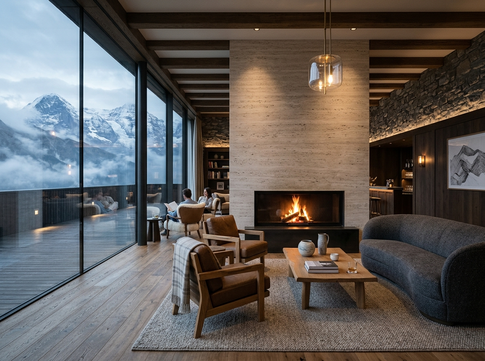

Precision, expressed with restraint.
An image-led direction for a category defined by exacting craft and enduring objects.
Selected visual studies
The ZIP includes three portfolio images for horology, hospitality, and fintech. They are presented here as visual studies; client stories and project data were not included in the package.
An image-led direction for a category defined by exacting craft and enduring objects.

An editorial lens on atmosphere, thoughtful service, and the details of a stay.
A visual language for digital services where confidence is built through clarity.
The WordPress templates expect portfolio entries and optional featured images from a site database. This static gallery uses only the bundled theme images.
Have a project in mind?